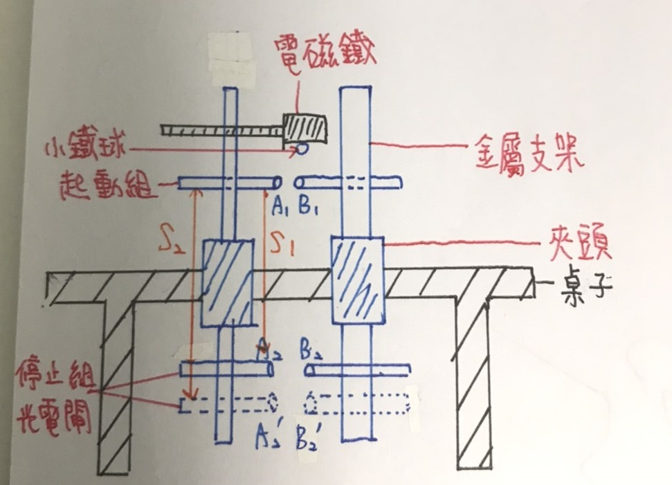
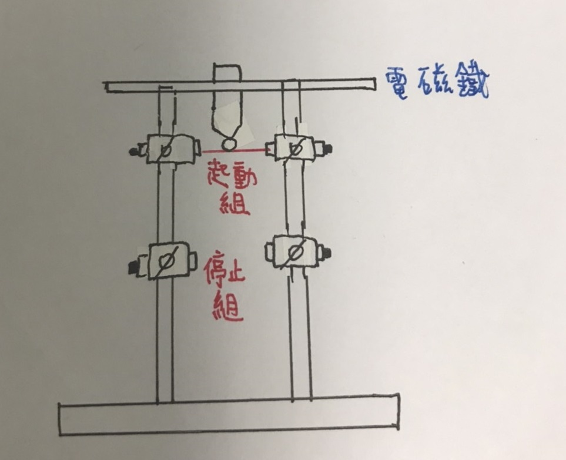
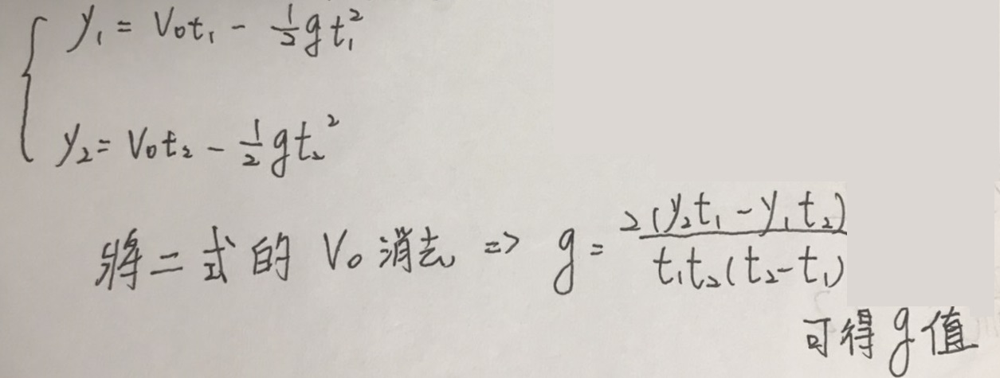
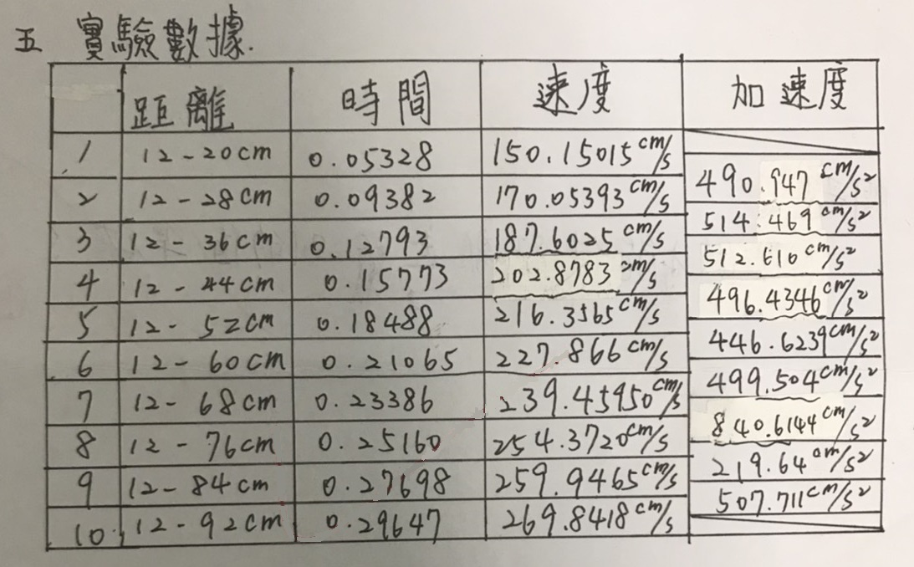
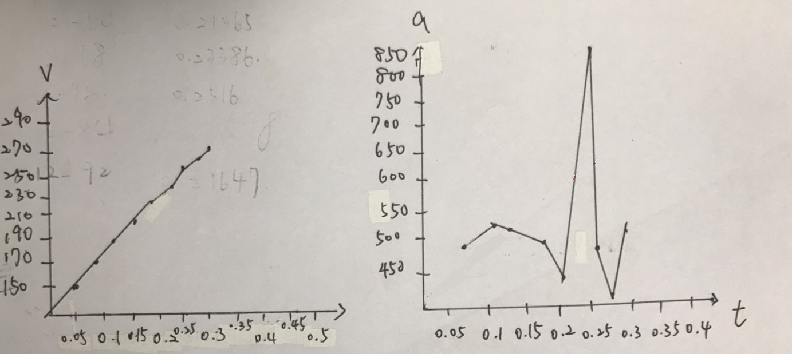

自由落體
實驗器材:
1.小鐵球一顆 2.電磁體
3.支架 4.光電閘
實驗目的:
1.利用紙帶打點分析物體的速度及加速度，並進而測出重力加速度的值。
2.利用光電計時器精密測量時距，並推得精確的重力加速度g值。
實驗原理:
1.將兩組光電閘分別放置於落體經過的位置，如下圖。


2.當落體通過A1、B1連線時，光電計時器開始計時。
3.當落體再經過A2、B2時，則停止計時。 可計算經過兩閘的時間t1。
4.再移動第二組光電閘，由A2、B2到A2'、B2'，重複第三步驟可得時間t2。
5.設落體經過第一閘速度為Vo，而兩次落體的距離為S1、S2。

實驗步驟:
(一)利用點痕分析加速度g
1.取一長紙經過電鈴計時器，以手拉紙帶10秒，求相鄰兩點的時間。
2.將紙帶綁上重物，由靜止釋放使重物做自由落體運動。
3.分析紙上的打點。
(二)利用光電計時器測量加速度g
1.將電磁鐵電源接上，並將小鐵球吸附其上。
2.切斷電源，讓球落下，當經1st光電閘時，即開始計時，經過2nd電閘時則停止。
3.改變2nd電閘位置，並重複1、2步驟。
實驗數據:

